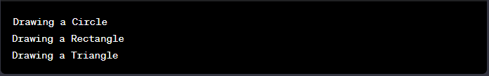

Write a Java program to create an interface Drawable with a method draw() that takes no arguments and returns void. Create three classes Circle, Rectangle, and Triangle that implement the Drawable interface and override the draw() method to draw their respective shapes.
Code:-
// Drawable interface
interface Drawable {
void draw();
}
// Circle class implementing Drawable interface
class Circle implements Drawable {
@Override
public void draw() {
System.out.println("Drawing a Circle");
// Add code to draw a circle here
}
}
// Rectangle class implementing Drawable interface
class Rectangle implements Drawable {
@Override
public void draw() {
System.out.println("Drawing a Rectangle");
// Add code to draw a rectangle here
}
}
// Triangle class implementing Drawable interface
class Triangle implements Drawable {
@Override
public void draw() {
System.out.println("Drawing a Triangle");
// Add code to draw a triangle here
}
}
// Main class to demonstrate the usage
public class DrawingShapes {
public static void main(String[] args) {
// Creating objects of Circle, Rectangle, and Triangle
Circle circle = new Circle();
Rectangle rectangle = new Rectangle();
Triangle triangle = new Triangle();
// Calling the draw() method for each shape
circle.draw();
rectangle.draw();
triangle.draw();
}
}
Output:-
